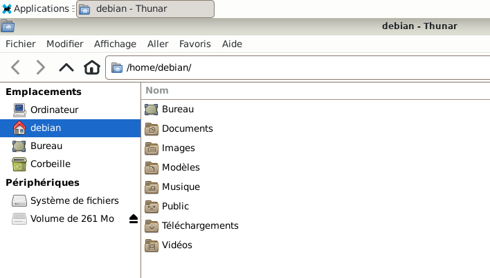
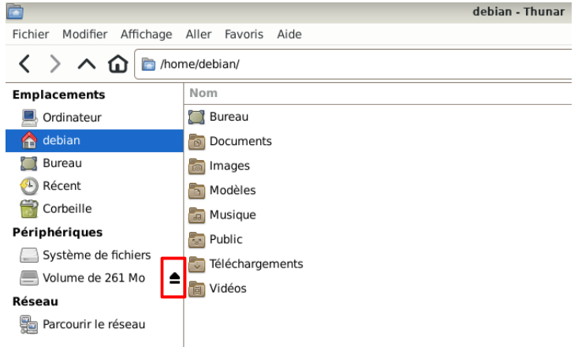
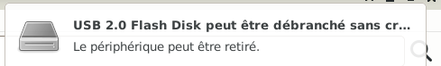
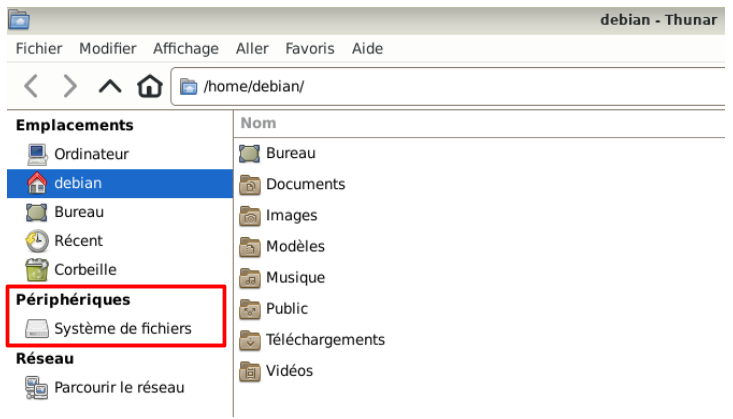
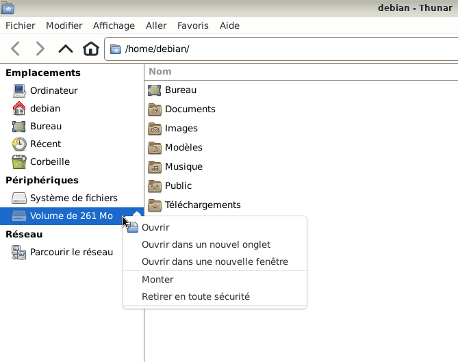
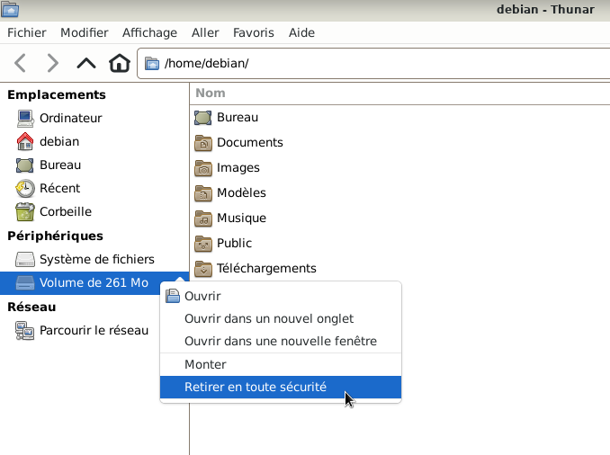

GLICD
Retirer une clé USB ou un disque dur externe en toute sécurité :
Le site Xfce.
Retirer une clé USB ou un disque dur externe n'importe comment peut engendrer une détérioration.
Il n'est donc pas souhaitable de retirer du PC une clé USB ou un disque dur externe sans passer par l'une
des procédures suivantes.
Plusieurs solutions existent et seules 2 solutions seront vues en utilisant le gestionnaire de fichiers Thunar.
- La solution du simple clic
- La solution du clic droit
- La solution du simple clic
- Ouvrir le gestionnaire de fichiers : Simple clic > Applications > Gestionnaire de fichiers

- Dans le volet latéral, à gauche sous
« Périphériques » apparaît la clé USB sous le nom : Volume de 261Mo

- Simple clic sur la petite flèche noire au niveau de la clé USB « Volume de 261Mo »
(encadrée en rouge).

- Une notification apparaît en haut à droite de l'écran
«Le périphérique peut être retiré.»

- Attendre que la notification disparaisse.
La clé USB « Volume de 261Mo » a dû aussi disparaitre du Volet latéral gauche,
sous Périphériques

- Retirer la clé USB du PC.
Nota : Si la clé est équipée d'une petite lumière (led) et que la led clignote :
avant de retirer la clé USB, attendre quelques secondes que la led soit éteinte ou reste allumée.
- Fermer le gestionnaire de fichiers : Simple clic > Fichier > Fermer la fenêtre

- La solution du clic droit
- Ouvrir le gestionnaire de fichiers : Simple clic > Applications > Gestionnaire de fichiers
- Dans le volet latéral gauche sous
« Périphériques » apparaît la clé USB sous le nom : Volume de 261Mo
- Clic droit sur la clé USB « Volume de 261Mo »

- Une liste déroulante apparaît
Simple clic > « Retirer en toute sécurité »

- Une notification apparaît en haut à droite de l'écran
«Le périphérique peut être retiré.»
- Attendre que la notification disparaisse.
La clé USB « Volume de 261Mo » a dû aussi disparaitre du Volet latéral gauche,
sous Périphériques
- Retirer la clé USB du PC.
Nota : Si la clé est équipée d'une petite lumière (led) et que la led clignote :
Avant de retirer la clé USB, attendre quelques secondes que la led soit éteinte ou reste allumée.
- Fermer le gestionnaire de fichiers : Simple clic > Fichier > Fermer la fenêtre

Retour
Informations sur le logiciel libre et
Merci.
Marques déposées :
Ce site ne fait pas partie de Debian, n'est pas produit par le projet
Debian, ni approuvé par le projet Debian.
Ce site n'est pas affilié à Debian. Debian est une marque déposée appartenant
à Software in the Public Interest, Inc.
Contribuer :
Ce site ne fait pas partie de XFCE, n'est pas produit par le projet
XFCE, ni approuvé par le projet XFCE.
Ce site n'est pas affilié à XFCE.
Ce site est juste réalisé par un passionné.